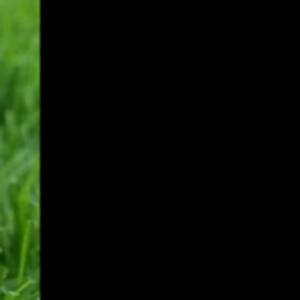
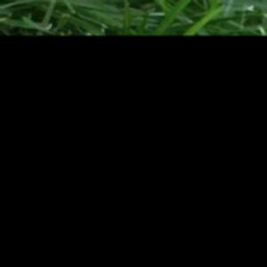
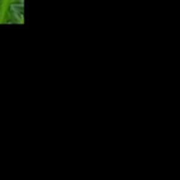
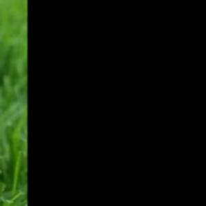
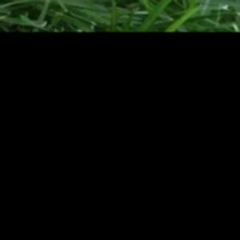
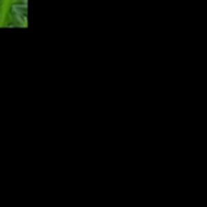

Введение в обработку больших изображений
Большие изображения, например, спутниковые снимки, медицинские изображения или изображения высокого разрешения, могут быть слишком большими для обработки в памяти целиком. Чтобы эффективно работать с такими изображениями, часто применяют технику разбиения изображения на небольшие части, называемые тайлами. Это позволяет обрабатывать изображение по частям, загружая в память только нужные фрагменты.
Что такое тайлы?
Тайлы — это небольшие прямоугольные участки изображения, на которые оно разбивается. Каждое изображение может быть разделено на сетку, где каждый элемент сетки представляет собой тайл. Обычно тайлы имеют одинаковый размер, но в зависимости от задачи можно варьировать размеры или даже использовать разные размеры для разных участков изображения.
Техника тайлов помогает:
- Снижать требования к памяти, обрабатывая только части изображения.
- Ускорять обработку изображений, параллелизируя обработку отдельных тайлов.
- Уменьшать нагрузку на систему, обрабатывая изображение по частям и загружая только те участки, которые необходимы.
Как разделить изображение на тайлы?
Чтобы разделить изображение на тайлы, нужно разбить его на сетку, задав количество строк и столбцов. Допустим, у нас есть изображение размером 1200x1200 пикселей, и мы хотим разделить его на 4x4 тайла. Это означает, что каждый тайл будет иметь размер 300x300 пикселей.
Пример на Python
from PIL import Image
# Загружаем изображение
image = Image.open('large_image.jpg')
# Определяем размер тайлов
tile_size = 300
# Получаем размеры исходного изображения
width, height = image.size
# Разбиваем изображение на тайлы
tiles = []
for i in range(0, height, tile_size):
for j in range(0, width, tile_size):
# Получаем часть изображения (тайл)
tile = image.crop((j, i, j + tile_size, i + tile_size))
tiles.append(tile)
# Сохраняем или обрабатываем тайлы по мере необходимости
for idx, tile in enumerate(tiles):
tile.save(f'tile_{idx}.jpg')
Этот код разбивает изображение на тайлы размером 300x300 пикселей. Мы используем метод crop() из библиотеки PIL (Python Imaging Library), чтобы вырезать фрагменты изображения. Тайлы затем можно сохранить или обработать дальше.
Обработка каждого тайла
После того как изображение разбито на тайлы, каждый тайл можно обрабатывать независимо. Это может быть полезно для задач, требующих интенсивных вычислений, таких как:
- Фильтрация изображений (например, размытие, усиление контраста).
- Обнаружение объектов или анализ структуры изображения.
- Применение алгоритмов машинного обучения или нейронных сетей.
Пример обработки тайла
Предположим, что мы хотим применить фильтр к каждому тайлу. Мы можем использовать библиотеки, такие как OpenCV или PIL для обработки.
import cv2
import numpy as np
# Функция для применения фильтра к тайлу
def process_tile(tile):
# Применяем гауссово размытие
return cv2.GaussianBlur(tile, (5, 5), 0)
# Пример обработки всех тайлов
processed_tiles = []
for tile in tiles:
# Преобразуем тайл в массив NumPy
tile_array = np.array(tile)
# Применяем фильтр
processed_tile = process_tile(tile_array)
# Преобразуем обратно в изображение
processed_tile_image = Image.fromarray(processed_tile)
processed_tiles.append(processed_tile_image)
# Сохраняем обработанные тайлы
for idx, processed_tile in enumerate(processed_tiles):
processed_tile.save(f'processed_tile_{idx}.jpg')
Здесь мы применяем гауссово размытие к каждому тайлу с использованием OpenCV. Для этого мы преобразуем тайлы в массивы NumPy, применяем фильтр и снова преобразуем результат в изображение.
 





Эффективная обработка и использование многозадачности
Обработка тайлов может быть параллелизирована, что существенно ускоряет обработку больших изображений. Многозадачность позволяет обрабатывать несколько тайлов одновременно, сокращая время работы программы. Для этого можно использовать модули, такие как concurrent.futures или multiprocessing.
Пример использования многозадачности
from PIL import Image
import numpy as np
# Загрузка изображений и преобразование в массивы NumPy
image_paths = ['processed_tile_0.jpg', 'processed_tile_1.jpg', 'processed_tile_2.jpg',
'processed_tile_3.jpg', 'processed_tile_4.jpg', 'processed_tile_5.jpg',
'processed_tile_6.jpg', 'processed_tile_7.jpg', 'processed_tile_8.jpg']
tiles = [np.array(Image.open(path)) for path in image_paths] # Создаем массивы NumPy для каждого изображения
import concurrent.futures
# Функция для параллельной обработки тайлов
def process_tile_parallel(tile):
# Применяем гауссово размытие
return cv2.GaussianBlur(tile, (5, 5), 10)
# Обработка тайлов с использованием многозадачности
with concurrent.futures.ThreadPoolExecutor() as executor:
processed_tiles_parallel = list(executor.map(process_tile_parallel, tiles))
# Сохраняем обработанные тайлы
for idx, processed_tile in enumerate(processed_tiles_parallel):
processed_tile_image = Image.fromarray(processed_tile)
processed_tile_image.save(f'parallel_processed_tile_{idx}.jpg')
В этом примере используется ThreadPoolExecutor для параллельной обработки тайлов с применением фильтра. Это значительно ускоряет обработку, особенно на многозадачных системах.
Заключение
Обработка больших изображений с использованием техники тайлов позволяет эффективно работать с изображениями, которые не помещаются в память целиком. Это особенно полезно для задач, связанных с анализом изображений, фильтрацией, применением алгоритмов машинного обучения и нейросетей. Разбиение изображения на тайлы также позволяет легко распределить работу на несколько потоков или процессов, что ускоряет обработку.
Важно помнить, что для каждой задачи можно подобрать оптимальный размер тайлов и методы их обработки, чтобы достичь наилучших результатов с минимальными затратами ресурсов.